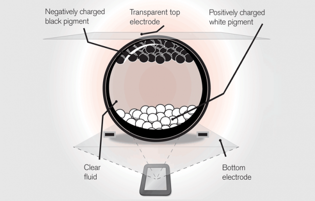

Other Displays

E-paper
What exactly is electronic paper?
Electronic paper is the technology that mimics the appearance of ordinary ink on paper.
How does it work?
The core of e-ink technology is small capsules filled with a clear fluid containing microscopic particles, each about as wide as a human hair.
Each electronic paper display is made up of millions of such capsules in a thin film, with the particles inside the capsules of different colors and different electric charges. Electrodes are placed above and below the capsule film. When a positive or negative electric field is applied to an individual electrode, the color particles with the corresponding charge will move either to the top or bottom of a capsule, making the surface of the e-paper display appear a certain color.
In the most basic incarnation of an e-paper screen, the particles inside an e ink capsule will be either black or white. The white particles carry a positive charge and the black particles a negative one. If the electric charge applied is negative, then the negative black ink particles will be repelled to the top of the capsule and color the surface of the display black in that spot.
Unlike a conventional flat panel display, which uses a backlight to illuminate its pixels , electronic paper reflects light like ordinary paper and is capable of holding text and images indefinitely without drawing electricity, while allowing the image to be changed later.